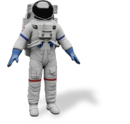

Results
1. Comparison with the state-of-the-art
Input 3D model
4D-fy [1]
Dream-in-4D [2]
AYG [3]
TC4D [4]
Ours
"A clown fish is swimming"
"A giraffe is walking"
"A lion is wandering"
AKD [5]
Ours
"A hippo is walking"
"A cat is walking"

2. More results on text-driven 3D Animation
Complex Cases
"A middle-age knight riding a horse is walking forward, HD, 4K"
"An astronaut shreds an electric guitar with full, unbridled enthusiasm, 4K"
"A humanoid robot is playing the violin with two legs stamping"
"A monkey with hat is playing base guitar excitedly, HD, high-quality"
"A roman soldier raising his right hand, HD, high-quality"
"A roman soldier raising his right leg while raising his both arms, HD, high-quality"
3. 3D Animation results with different text prompt
Input 3D model
"... is walking"
"... is dancing"
"... is squating down"
"... is raising his arms"
Input 3D model
Input 3D model
Input 3D model
Input 3D model
Ablation Studies
on score distillation methods
"A lion is wandering"
SDS (CFG=7.5) [6]
VSD [7]
SDS (CFG=100)
MSD w/o dual distribution modeling
MSD w/o faithful noise
MSD (Ours)
on static distribution modeling
"A elephant is walking"
Static prompt
LoRA approximation (Ours)
on motion regularization
"A camel is walking"
w/o TV-3D loss
w/o ARAP loss
Full regularization (Ours)
Reference
[1] Zheng et al., A Unified Approach for Text- and Image-guided 4D Scene Generation, CVPR 2024.
[2] Bahmani et al., 4D-fy: Text-to-4D Generation Using Hybrid Score Distillation Sampling, CVPR 2024.
[3] Ling et al., Align Your Gaussians:Text-to-4D with Dynamic 3D Gaussians and Composed Diffusion Models, CVPR 2024.
[4] Bahmani et al., TC4D: Trajectory-Conditioned Text-to-4D Generation, ECCV 2024.
[5] Li et al., Articulated Kinematics Distillation from Video Diffusion Models, CVPR 2025.
[6] Poole et al., DreamFusion: Text-to-3D using 2D Diffusion, ICLR 2023.
[7] Wang et al., ProlificDreamer: High-Fidelity and Diverse Text-to-3D Generation with Variational Score Distillation, NeurIPS 2023.
BibTeX
@article{anonymous2025text,
author = {Anonymous author(s)},
title = {Animus3D: Text-driven 3D Animation via Motion Score Distillation},
year = {2025},
}